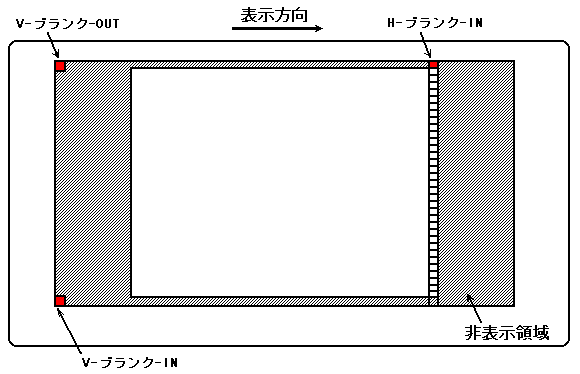
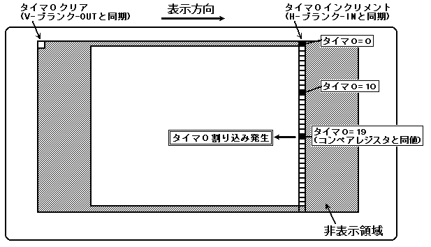
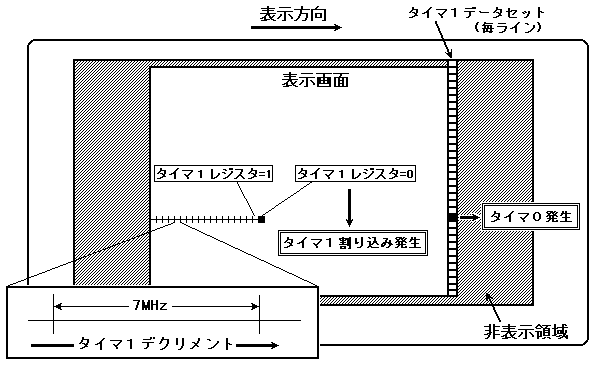
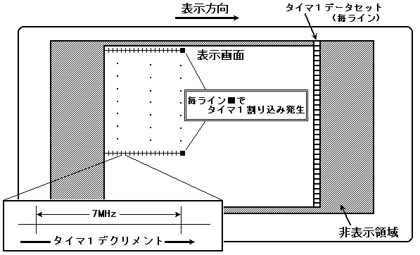

★HARDWARE Manual
★SCUユーザーズマニュアル
★HARDWARE Manual
★SCUユーザーズマニュアル
| ビット割当 | 割り込み要因 | 割り込み元 | ベクタ番号 | レベル |
| bit 0 | V-ブランク-IN | VDP2 | ベクタ40 | レベルF |
| bit 1 | V-ブランク-OUT | VDP2 | ベクタ41 | レベルE |
| bit 2 | H-ブランク-IN | VDP2 | ベクタ42 | レベルD |
| bit 3 | タイマ0 | SCU | ベクタ43 | レベルC |
| bit 4 | タイマ1 | SCU | ベクタ44 | レベルB |
| bit 5 | DSP-終了 | SCU | ベクタ45 | レベルA |
| bit 6 | サウンド-Request | SCSP | ベクタ46 | レベル9 |
| bit 7 | SMPC | SMPC | ベクタ47 | レベル8 |
| bit 8 | PAD割り込み | PAD | ベクタ48 | レベル8 |
| bit 9 | レベル-2 DMA終了 | SCU | ベクタ49 | レベル6 |
| bit 10 | レベル-1 DMA終了 | SCU | ベクタ4A | レベル6 |
| bit 11 | レベル-0 DMA終了 | SCU | ベクタ4B | レベル5 |
| bit 12 | DMA-イリーガル | SCU | ベクタ4C | レベル3 |
| bit 13 | スプライト描画終了 | VDP1 | ベクタ4D | レベル2 |
| bit 14 | − | |||
| bit 15 | − | |||
| bit 16 | 外部割り込み00 | A-Bus | ベクタ50 | レベル7 |
| bit 17 | 外部割り込み01 | A-Bus | ベクタ51 | レベル7 |
| bit 18 | 外部割り込み02 | A-Bus | ベクタ52 | レベル7 |
| bit 19 | 外部割り込み03 | A-Bus | ベクタ53 | レベル7 |
| bit 20 | 外部割り込み04 | A-Bus | ベクタ54 | レベル4 |
| bit 21 | 外部割り込み05 | A-Bus | ベクタ55 | レベル4 |
| bit 22 | 外部割り込み06 | A-Bus | ベクタ56 | レベル4 |
| bit 23 | 外部割り込み07 | A-Bus | ベクタ57 | レベル4 |
| bit 24 | 外部割り込み08 | A-Bus | ベクタ58 | レベル1 |
| bit 25 | 外部割り込み09 | A-Bus | ベクタ59 | レベル1 |
| bit 26 | 外部割り込み10 | A-Bus | ベクタ5A | レベル1 |
| bit 27 | 外部割り込み11 | A-Bus | ベクタ5B | レベル1 |
| bit 28 | 外部割り込み12 | A-Bus | ベクタ5C | レベル1 |
| bit 29 | 外部割り込み13 | A-Bus | ベクタ5D | レベル1 |
| bit 30 | 外部割り込み14 | A-Bus | ベクタ5E | レベル1 |
| bit 31 | 外部割り込み15 | A-Bus | ベクタ5F | レベル1 |
| 割り込み要因総称 | 割り込み要因名称 |
| ブランキング割り込み | V-ブランク-IN |
| V-ブランク-OUT | |
| H-ブランク-IN | |
| タイマ割り込み | タイマ0 |
| タイマ1 | |
| DMA終了割り込み | レベル2-DMA終了 |
| レベル1-DMA終了 | |
| レベル0-DMA終了 |
図2.11 ブランキング割り込み詳細

図2.12 タイマ0割り込み発生過程
(コンペアレジスタ=19と設定したときの例)

図2.13 タイマ1割り込み発生過程(タイマ0と同期)

図2.14 タイマ1割り込み発生過程(タイマ0と非同期)

★HARDWARE Manual
★SCUユーザーズマニュアル